Making temporary preparations and drawing cells
An onion looks solid. Under a light microscope, its surface is a sheet of separate cells. A useful view begins with a thin, careful preparation.
What makes a useful preparation?
A temporary preparation, or wet mount, holds fresh cellular material in liquid beneath a thin glass coverslip for immediate viewing. It is not preserved for long-term storage.
Temporary preparation
Fresh cellular material mounted in liquid beneath a coverslip for immediate viewing with a light microscope.
The specimen must be thin. Thick material makes layers overlap and blocks or scatters light.
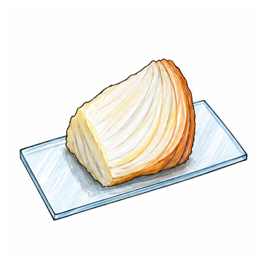
A one-cell-thick onion epidermis lets light pass through one layer. Water keeps onion tissue moist. Physiological saline often suits animal cells because it reduces damaging water movement.
Why might a transparent cell still be difficult to see?
A biological stain increases contrast, the difference between a structure and its background. Iodine can clarify plant tissue. Methylene blue can clarify animal-cell nuclei.
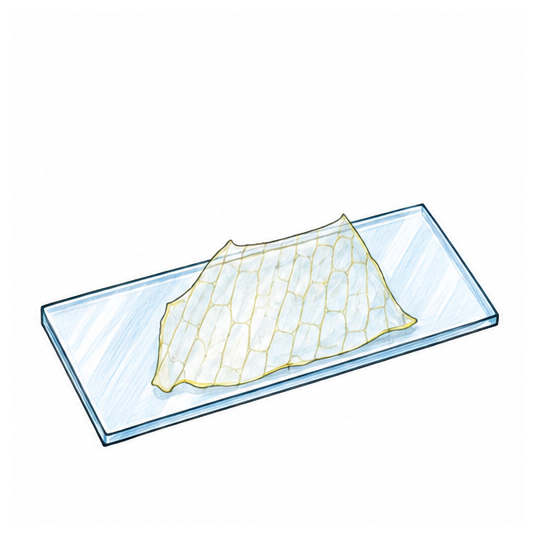
Biological stain
A coloured substance used to increase contrast so particular cell structures are easier to distinguish.
Making an onion epidermis wet mount
Work in order. Hold glass by its edges and handle stain safely.
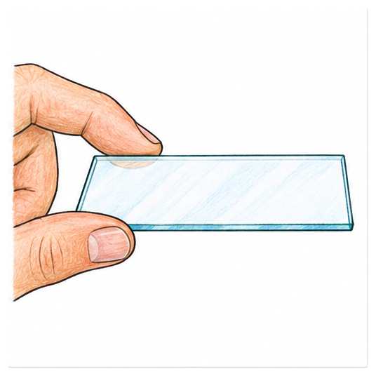
1. Clean slideHold by the edges.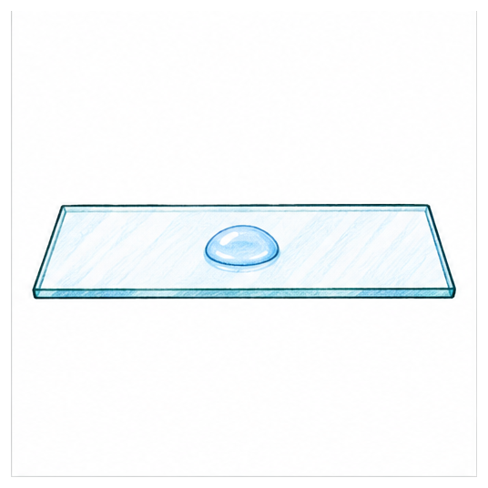
2. Add liquidUse one small drop.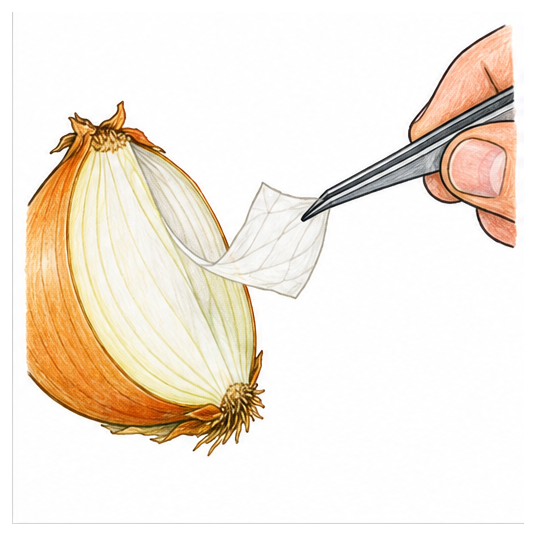
3. Peel tissueTake a thin inner epidermis.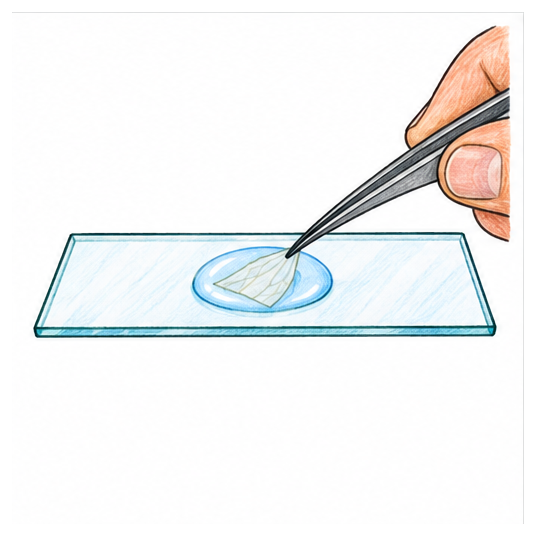
4. Lay it flatRemove folds gently.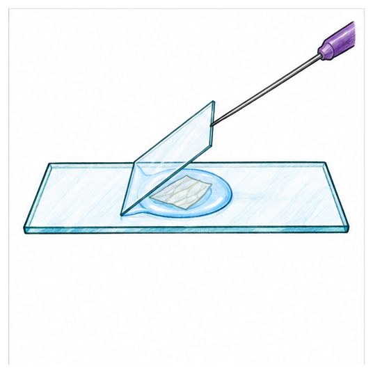
5. Lower coverslipLower slowly from about 45 degrees.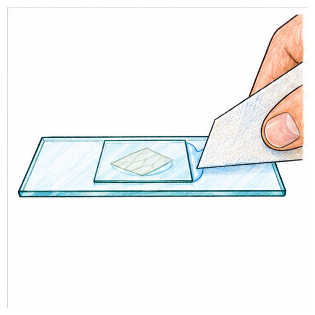
6. Blot excessTouch paper to the edge.What happens if the coverslip is dropped flat?
Air can become trapped. An air bubble usually appears round with a thick dark rim. It is not a nucleus. The moving liquid front beneath an angled coverslip pushes air outward.
Diagnose a poor preparation
Overlapping walls suggest tissue that is too thick or folded. A dark circle suggests an air bubble. Poor internal detail suggests low contrast. Each fault needs a different repair.
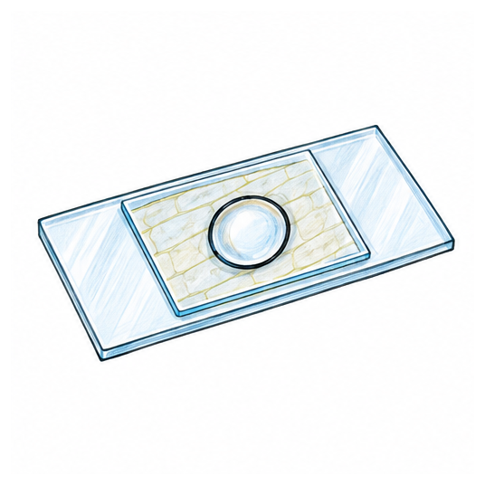
Which action is most likely to prevent circular objects with thick dark rims?
Starting with the microscope
Put the specimen above the stage opening. Begin with the lowest-power objective lens. Its wider field makes the specimen easier to find. Focus and centre the cells before changing to higher power.
Why centre the specimen first?
Higher power gives a smaller field of view. A specimen near the edge can disappear.
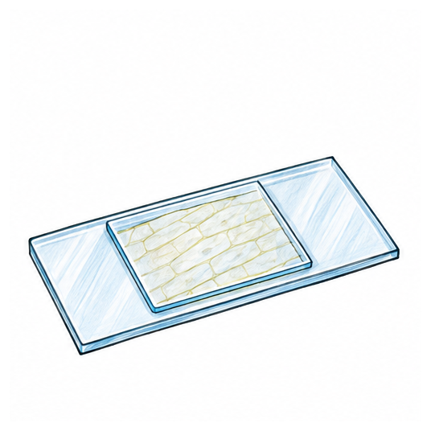
What should you do before moving to higher power?
Turning an observation into a biological drawing
A biological drawing is a scientific record of visible shapes, boundaries and relative sizes. It is not an artistic picture.
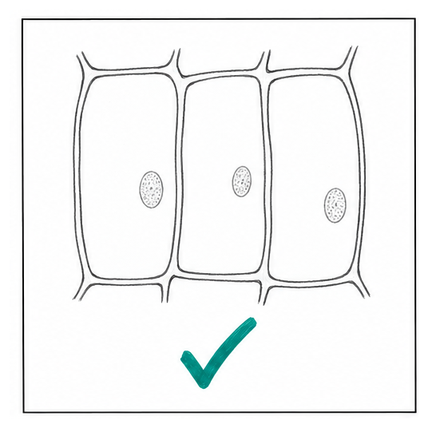
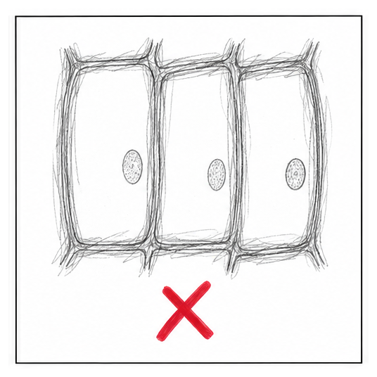
- Use a sharp pencil.
- Draw large.
- Use continuous lines.
- Do not shade or colour.
- Keep correct proportions.
- Show only visible structures.
- Use ruled label lines.
- Do not cross lines.
- Touch the named structure.
- Write horizontally.
- Do not use arrowheads.
- Add a suitable title.
Low-power plan
Shows tissue-region outlines and arrangement, not individual cells.
High-power drawing
Shows a few representative cells and visible structures. Never add structures from memory.
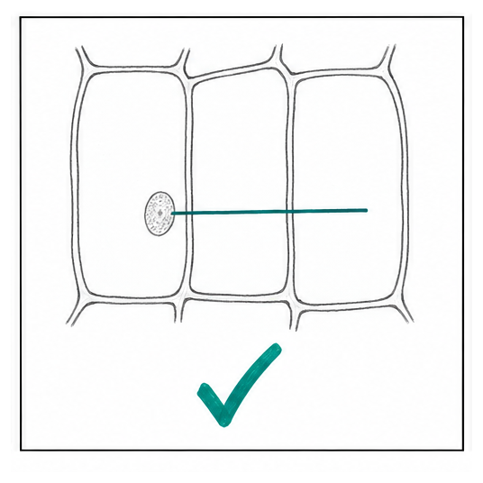
Improve a drawing
Enlarge tiny cells, replace fuzzy strokes with single lines, remove shading, and use separate horizontal ruled label lines without arrowheads. Accuracy matters more than decoration.
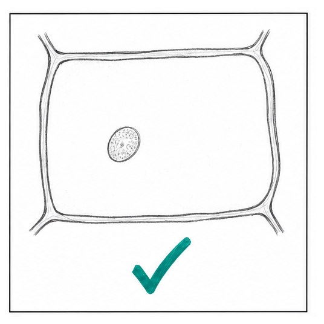
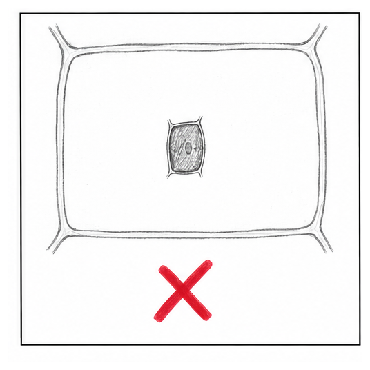
Which method gives the strongest scientific record?
Common mistakes and repairs
- Thick: take a thinner piece.
- Folded: flatten gently.
- Bubbles: lower at an angle.
- Dry: add liquid and observe promptly.
- Floating: blot excess liquid.
- Invented detail: draw only what is visible.
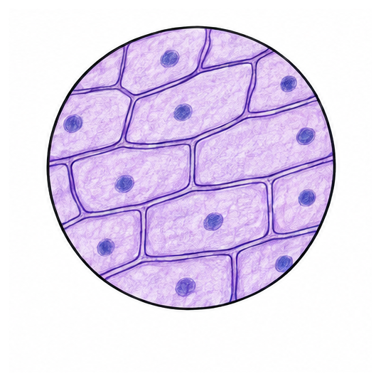
Core recap
- A temporary preparation holds fresh material in liquid beneath a coverslip.
- Use a thin, flat specimen.
- A biological stain increases contrast.
- Lower the coverslip at about 45 degrees.
- Begin with the lowest-power objective, then focus and centre.
- Draw large, clear, unshaded outlines with accurate proportions and straight non-crossing labels.